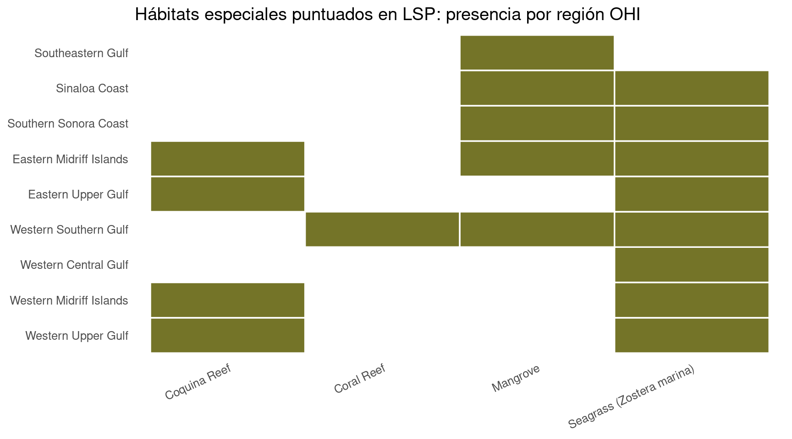

BORRADOR: Sentido de Pertenencia EWG 3.2
BORRADOR: Sentido de Pertenencia EWG 3.2
Vista previa: Sentido de Pertenencia (SP)
Planeamos revisar nuestras estimaciones actuales de los puntajes de SP en la reunión del Grupo de Trabajo de Expertos 3.2 el 13 de agosto de 2026. Este documento tiene como objetivo ofrecer a los asistentes una visión general del modelo de la meta y sus insumos, y una vista previa de sus resultados, como preparación para la reunión. Si lo lee y tiene inquietudes metodológicas menores, señálelas y tráigalas a la reunión. Si tiene inquietudes metodológicas mayores, compártalas con anticipación (correo smanos@nceas.ucsb.edu). Si no puede asistir a la reunión pero le gustaría conversar, con gusto podemos reunirnos uno a uno antes o después.
Le informamos que este documento está destinado únicamente a uso interno y con fines informativos. No debe interpretarse como la palabra final ni como material de calidad de revisión por pares.
Gracias por su continuo compromiso con este trabajo. ¡Esperamos conversar sobre estos puntajes con ustedes el 13 de agosto!
Sobre la meta SP
La meta Sentido de Pertenencia (en inglés, Sense of Place) mide qué tan bien estamos cuidando de manera sostenible los lugares y especies marinos y costeros que aportan herencia, memoria compartida e identidad a las comunidades del Golfo.
El Índice de Salud Oceánica trata a las personas como parte del ecosistema. Sentido de Pertenencia se centra en la identidad cultural y la pertenencia vinculadas al Golfo, no en los ingresos del turismo (Turismo y Recreación; Medios de Vida y Economías) ni en el tonelaje de alimentos (Provisión de Alimentos).
DEFINICIÓN CENTRAL
- Enfoque: Cuidado sostenible de lugares y especies que sostienen la identidad cultural y la pertenencia
- No trata de: Ingresos del turismo, volumen de captura comercial ni biodiversidad genérica por sí sola
- Énfasis: Condición de especies icónicas, lugares especiales duraderos y participación comunitaria costera
Modelo de la meta
El puntaje general de Sentido de Pertenencia es la media aritmética con pesos iguales de tres submetas:
SP = promedio(CCE, LSP, ICO)
SP_{r,t} = \frac{CCE_{r,t} + LSP_{r,t} + ICO_{r,t}}{3}
donde:
- SP_{r,t} es el puntaje de Sentido de Pertenencia para la región r en el año t
- CCE_{r,t} es el puntaje de Participación Comunitaria Costera (adopciones de playas y lugares culturales no naturales)
- LSP_{r,t} es el puntaje de Lugares Especiales Duraderos
- ICO_{r,t} es el puntaje de Especies Icónicas
| Submeta | Qué mide |
|---|---|
| CCE | Participación Comunitaria Costera: adopciones de playas (programa de adopción Ama tu Playa) y lugares culturales no naturales escalados a la población costera |
| LSP | Lugares Especiales Duraderos: condición de los lugares especiales identificados por el EWG (áreas protegidas, sitios de buceo, sitios de pesca, arqueología, hábitats y otros lugares) |
| ICO | Especies Icónicas: estado de riesgo medio de las especies culturalmente icónicas presentes en cada región |
Los puntajes se calculan para cada una de las nueve regiones OHI del Golfo de California. Un puntaje de 100 representa el punto de referencia (estado sostenible ideal). Cuando una submeta no tiene valor para una región-año, la media aritmética usa las submetas disponibles (na.rm = TRUE).
Los pesos iguales para CCE, LSP e ICO son la elección de trabajo actual. Consulte Temas para discusión para confirmarlo con el grupo.
Nota sobre los nombres en inglés y en español
Quizá haya notado que usamos Sense of Place y Sentido de Pertenencia juntos, aunque pertenencia suele traducirse como “belonging”.
Al inicio de una reunión de Goalkeeper, encontramos una diferencia regional en lo que transmiten “Sense of Place” y “Sense of Belonging”. Históricamente, el Índice de Salud Oceánica Global ha usado Sense of Place para mantener y promover la identidad y la conexión de las comunidades locales con el océano. Con base en la retroalimentación del grupo, Sense of Belonging reflejaba mejor ese mismo concepto en México.
Consideramos renombrar la meta a Sense of Belonging para coincidir con la definición regional, pero decidimos no hacerlo. En la literatura de Estados Unidos, Sense of Belonging suele describir la conexión de las personas con su comunidad, no la conexión de la comunidad con un lugar. Usar ese nombre en inglés arriesgaría perder el vínculo con el océano, que es lo que queremos evaluar.
Con eso en mente, el grupo Goalkeeper decidió:
- En inglés, seguimos llamándola Sense of Place, para coincidir con la literatura y la comprensión en inglés de la frase.
- En español, la llamamos Sentido de Pertenencia, para reflejar la conexión entre una comunidad y su lugar.
Esta elección de nombre fue desarrollada y respaldada por el Grupo Goalkeeper y se confirmó en la reunión del Grupo de Trabajo de Expertos en enero.
Puntajes generales de Sentido de Pertenencia
El puntaje de estatus actual general de SP para cada región y año es la media aritmética de los puntajes CCE, LSP e ICO de esa región.
Promedio del Golfo del estatus actual de SP
El mismo puntaje general de SP promediado entre las nueve regiones OHI del Golfo de California para cada año:
\text{SP}^{\text{GOC}}_{t} = \frac{1}{9}\sum_{r=1}^{9} SP_{r,t}
donde SP_{r,t} es el puntaje regional de Sentido de Pertenencia y la línea del Golfo es su media simple para el año t. Compárela con la gráfica regional de arriba para ver si los patrones del Golfo están impulsados por pocas regiones o se comparten a lo largo de la costa.
Participación Comunitaria Costera (CCE)
CCE captura la participación comunitaria costera con playas y lugares culturales no naturales que ayudan a las personas a conectarse con el Golfo.
En la discusión más reciente del Grupo de Trabajo de Expertos, las limpiezas y adopciones de playas y la presencia continua de lugares culturales no naturales se afirmaron como componentes apropiados de CCE. También se consideraron indicadores de apoyo a comunidades indígenas costeras, pero no se incluyen en el puntaje actual. Consulte Reconocimiento: Pueblos originarios abajo.
CCE_{r,t} = \mathrm{average}\big(Ama_{r,t},\; Cult_{r,t}\big)
donde:
- CCE_{r,t} es el puntaje de Participación Comunitaria Costera para la región r en el año t
- Ama_{r,t} es el puntaje de adopciones de playas (programa de adopción Ama tu Playa)
- Cult_{r,t} es el puntaje de lugares culturales no naturales
Los valores faltantes se ignoran en el promedio. Por ejemplo, la Región 2 no tiene playas en el inventario de Ama tu Playa, así que su CCE se basa solo en la capa de lugares culturales.
Adopciones de playas
El programa de adopción Ama tu Playa forma parte de la Estrategia Nacional de Limpieza y Conservación de Playas y Costas de México 2025-2030, coordinada con SEMARNAT y socios. Las organizaciones adoptan una playa o tramo costero y se comprometen a mantenerlo limpio hasta 2030, con la meta nacional de playas libres de residuos plásticos.
Qué puntamos: porcentaje de playas del inventario del programa SEMARNAT que ya están adoptadas en cada región OHI (no kilogramos de basura recolectada). Más basura recolectada puede significar playas más sucias o un esfuerzo de limpieza más fuerte, así que la proporción adoptada se acerca mejor a la propia meta de custodia del programa.
Ama_{r,2025} = 100 \times \frac{\text{adopted beaches}_{r}}{\text{total inventory beaches}_{r}}
donde:
- Ama_{r,2025} es el puntaje de adopciones de playas para la región r en 2025
- \text{adopted beaches}_{r} es el número de playas del inventario en esa región que ya están adoptadas
- \text{total inventory beaches}_{r} es el número de playas del inventario en esa región
Para 2019-2024, Ama_{r,t} = 0 porque la campaña comienza con la estrategia 2025-2030. La Región 2 no tiene playas en el inventario del programa después de la unión espacial con las regiones OHI y el búfer costero interior de 10 km. Eso no se trata como un puntaje perfecto de 100 (la ausencia del inventario no es lo mismo que estar libre de plástico). Se almacena como NA con la razón "no beaches in program inventory".
Fuentes de datos
- Inventario de playas Ama tu Playa de SEMARNAT y estatus de adopción del catálogo de la estrategia nacional de limpieza y conservación de playas; porcentaje de adopción por región OHI
- Plataforma: adoptaunaplaya.com
Lugares culturales no naturales
Esta capa de CCE mide establecimientos culturales hechos por personas cerca de la costa del Golfo que apoyan la conexión comunitaria con el lugar.
¿Qué establecimientos culturales se incluyen?
Partimos del sector 71 de INEGI DENUE (servicios de esparcimiento culturales y deportivos, y otros servicios recreativos) y conservamos establecimientos que funcionan como unidades económicas culturales con una conexión costera significativa, dentro del búfer costero interior de 10 km de los seis estados del Golfo de California.
Ejemplos de tipos de establecimientos retenidos
- Teatros y otros espacios de artes escénicas
- Museos y espacios de exhibición cultural
- Sitios históricos y establecimientos patrimoniales relacionados
- Jardines botánicos y espacios similares de naturaleza y cultura
- Parques públicos y espacios de recreación con conexión cultural
- Marinas y establecimientos recreativos costeros relacionados que apoyan el uso costero basado en el lugar
Ejemplos excluidos
- Charreadas (por ejemplo establecimientos llamados LIENZO CHARRO)
- Galleras (por ejemplo GALLERA)
- Negocios administrativos seleccionados identificados por nombre que no representan participación cultural comunitaria con la costa
La intención es contar lugares donde las personas se reúnen en torno a la cultura costera, el patrimonio y la recreación, no todo establecimiento que caiga bajo el amplio sector recreativo de DENUE.
Cómo se construyó la capa
- Partir del sector 71 de INEGI DENUE para 2019-2024.
- Restringir a los seis estados del GoC y conservar solo establecimientos dentro del búfer costero interior de 10 km.
- Curar a unidades económicas culturales con una conexión costera significativa (vea el desplegable de arriba para lo incluido y lo excluido).
- Estimar empleados a partir de las clases de tamaño de empleo de DENUE, agregar por región y año, y dividir entre la población de localidades costeras dentro del mismo búfer de 10 km.
- Convertir la tasa per cápita a un estatus de 0 a 100 usando el cuantil 75 de empleados per cápita entre todas las regiones y años como referencia:
Cult_{r,t} = \min\left(100,\; 100 \times \frac{\text{employees per coastal pop}_{r,t}}{Q_{0.75}(\text{employees per coastal pop})}\right)
donde:
- Cult_{r,t} es el puntaje de lugares culturales no naturales para la región r en el año t
- \text{employees per coastal pop}_{r,t} son los empleados estimados de establecimientos culturales divididos entre la población de localidades costeras en el búfer costero interior de 10 km
- Q_{0.75}(\text{employees per coastal pop}) es el cuantil 75 de esa tasa entre todas las regiones y años
- Los puntajes por encima de 100 se limitan a 100
Sí, tanto los establecimientos como la población son costeros. Los establecimientos se restringen al búfer costero interior de 10 km, y la población proviene de localidades que intersectan ese mismo búfer (no municipios enteros tierra adentro del Golfo).
Relleno temporal de 2025: DENUE 2025 aún no está disponible. Para la fusión de SP, 2025 se copia temporalmente de 2024 hasta que se publique DENUE 2025. La serie observada 2019-2024 permanece sin cambios para poder revertir esto después.
Fuentes de datos
- Establecimientos culturales y recreativos del sector 71 de INEGI DENUE dentro del búfer costero interior de 10 km; empleados estimados a partir de clases de tamaño DENUE, escalados a la población de localidades costeras, referenciados al cuantil 75; 2025 copiado temporalmente de 2024 hasta que se publique DENUE 2025
¿Por qué el cuantil 75 (y no el 90)?
Antes de convertir a un puntaje de estatus actual, las tasas crudas de empleados por residente costero ya muestran que las Western Midriff Islands (Región 2) están muy por encima de las demás regiones. Usar una referencia alta como el cuantil 90 haría que ese valor atípico domine el punto de referencia y empuje a la mayoría de las demás regiones hacia puntajes muy bajos. El cuantil 75 sigue recompensando una mayor densidad de empleo cultural, pero está menos impulsado solo por la Región 2.
La gráfica de abajo muestra la tasa cruda (aún no escalada a 0-100). Las líneas horizontales marcan los cuantiles 75 y 90 agrupados entre todas las observaciones región-año.
La referencia del cuantil 75 sigue siendo un tema abierto de discusión. Consulte Temas para discusión.
Reconocimiento: Pueblos originarios
Por qué existe esta sección
Esta sección documenta una decisión metodológica y ética: las comunidades indígenas costeras son centrales para el Golfo de California, pero no nos sentimos cómodos puntuar su Sentido de Pertenencia y su conexión con el océano con indicadores que diseñamos sin una colaboración sostenida con representantes comunitarios.
Los pueblos originarios y otras comunidades de Primeras Naciones del Golfo de California mantienen relaciones profundas y vivas con lugares costeros y marinos. Esas relaciones no son una nota al margen del Sentido de Pertenencia. Forman parte de lo que Sentido de Pertenencia significa en esta región.
Al mismo tiempo, los pueblos indígenas no son una sola casilla. También son residentes costeros, pescadores, portadores de conocimiento y vecinos dentro de los mismos paisajes marinos que el Índice intenta describir. No queremos aislarlos del Índice, y tampoco queremos imponer un marco externo para evaluar la condición de su conexión con el océano.
Qué consideramos para CCE
Durante el desarrollo de la meta, exploramos indicadores de apoyo a comunidades indígenas costeras, incluyendo ideas como:
- Reconocimiento, por ejemplo si existen documentos gubernamentales que ofrezcan traducciones entre lenguas de pueblos originarios costeros y español (como posible señal de reconocimiento).
- Planes de justicia y Planes de Justicia y Desarrollo Integral del INPI para pueblos originarios costeros, descritos por el INPI como ejercicios de planeación realizados por Autoridades Tradicionales a través de sus propias formas de gobierno y toma de decisiones, con apoyo del INPI para diagnósticos regionales, propuestas desde visiones comunitarias de bienestar y justicia, y seguimiento de acuerdos con dependencias gubernamentales.
- Centros de desarrollo indígena que reciben financiamiento federal, comparados con el tamaño poblacional de las Primeras Naciones (INEGI), como posible señal de apoyo institucional.
El Dr. Ben Wilder también propuso enmarcar el apoyo alrededor de dos preguntas prácticas: (1) ¿la comunidad está reconocida por el gobierno?, y (2) ¿tienen apoyo de financiamiento y centros?
Por qué estos indicadores no están en el puntaje actual
Después de la discusión, decidimos no incluir estos indicadores en el puntaje CCE publicado para este ciclo de evaluación, porque:
- No tuvimos el tiempo ni los recursos para mantener a los grupos indígenas en conversación continua a lo largo del desarrollo del Índice de la manera que este tema requiere.
- No queremos presuponer la condición de una comunidad, ni publicar un puntaje que implique que una comunidad “debería” querer una forma particular de reconocimiento (por ejemplo política lingüística) cuando no lo hemos escuchado de sus representantes.
- Hay matices importantes. Por ejemplo, los Tohono O’odham comunicaron a uno de los expertos de nuestro grupo de trabajo, como parte de un proyecto separado, que no desean ser considerados un pueblo originario. Cualquier indicador construido solo sobre categorías oficiales perdería ese tipo de autodeterminación.
- Recibimos oposición a contar el número de centros de recursos indígenas. Ese enfoque trataría el apoyo financiero gubernamental a un lugar de reunión y recursos comunitarios como automáticamente “positivo,” pero no sabemos si eso es bueno a menos que hablemos con los pueblos originarios mismos. La discusión del Grupo de Trabajo de Expertos confirmó las limpiezas de playas y la presencia continua de lugares culturales no naturales para CCE, mientras que el uso de centros de desarrollo indígena quedó en duda.
Por ello, los componentes de reconocimiento lingüístico, planes de justicia y centros de desarrollo indígena se movieron a Nivel 3: ideas que idealmente se incorporarían la próxima vez que se realice la evaluación, pero que actualmente no son indicadores que estemos listos para puntuar como si representaran valores comunitarios.
Qué estamos haciendo en su lugar
Para esta evaluación:
- El modelo CCE actual se centra en adopciones de playas (programa de adopción Ama tu Playa) y lugares culturales no naturales escalados a la población costera.
- Estamos pidiendo al financiador que invite a representantes comunitarios a la reunión de actores interesados, como lo haremos con otras comunidades costeras como pescadores, y que aprendamos de esa conversación antes de diseñar cualquier enfoque de puntuación específico para pueblos indígenas.
- Esperamos que futuras iteraciones del Índice de Salud Oceánica del Golfo de California puedan incorporar indicadores co-desarrollados si las comunidades eligen participar. El Índice está pensado para reevaluarse a lo largo del tiempo, y los métodos deben seguir mejorando a medida que crecen las relaciones y la capacidad.
Invitación para EWG 3.2
Agradecemos la orientación del Grupo de Trabajo de Expertos sobre:
- Cómo seguir reconociendo claramente a los pueblos originarios en el sitio web y en las comunicaciones sin extraer ni puntuar lo que no se nos ha invitado a puntuar.
- Cómo las invitaciones a actores interesados pueden ser respetuosas, prácticas y lideradas por la comunidad.
Si tienen contactos, advertencias o lenguaje preferido para este reconocimiento, por favor escríbanme.
Lugares Especiales Duraderos (LSP)
LSP mide qué tan bien estamos protegiendo los lugares que el Grupo de Trabajo de Expertos identificó como lugares especiales duraderos por razones ecológicas, culturales, recreativas, espirituales o estéticas.
Cómo se construyó LSP
Los expertos identificaron lugares especiales. El Grupo de Trabajo de Expertos identificó lugares especiales duraderos a lo largo del Golfo. Luego agrupamos esos lugares por tipo (áreas protegidas especiales, sitios prioritarios de buceo, sitios icónicos de pesca, sitios arqueológicos, hábitats especiales y todos los demás lugares especiales).
Sobrepusimos protecciones. Sobrepusimos las coordenadas de esos lugares especiales con las protecciones potenciales que los mantendrían preservados, disponibles y bien gestionados para que las generaciones futuras puedan seguir disfrutándolos (por ejemplo áreas protegidas CONANP y Ramsar, ZRP, TURF, regulación del INAH y otras protecciones legales).
No todas las protecciones son iguales. Las protecciones legales por sí solas generalmente recibieron puntajes de condición de protección más bajos que formas más directas de gestión. Las áreas protegidas se puntuaron usando SIMEC i-efectividad (y la presencia de plan de manejo Ramsar cuando correspondía). En otras palabras, el puntaje refleja qué tan bien está protegido un lugar, no solo si existe una etiqueta de protección en el papel.
LSP_{r} = \mathrm{average}\big(\text{condition of LSP categories present in region } r\big)
donde:
- LSP_{r} es el puntaje de Lugares Especiales Duraderos para la región r
- La condición de cada categoría es la condición de protección asignada a los lugares especiales de esa categoría en la región (áreas protegidas, sitios de buceo, sitios de pesca, sitios arqueológicos, hábitats especiales y todos los demás lugares especiales)
- El puntaje regional es la media aritmética no ponderada entre las categorías LSP que tienen elementos en esa región
Año de evaluación: instantánea 2025 (se muestra en barras porque hay un solo año)
Para puntajes preliminares por región y categoría, y una visión general de la toma de decisiones usada para obtener cada puntaje, consulte esta hoja de Google: Puntajes preliminares LSP y visión general de decisiones.
Lugares especiales duraderos identificados por expertos
Abajo están las listas de lugares limpias usadas para calcular el estatus actual de LSP (a partir de las tablas de condición procesadas), agrupadas por tipo. Se prefieren sobre la hoja cruda del inventario EWG, que aún contiene duplicados y entradas superadas. Expanda un desplegable para ver los nombres únicos de ese grupo.
Áreas Protegidas Especiales (33)
Elementos de áreas protegidas limpios usados en el estatus actual de LSP (priorizando nombres WDPA o SIMEC cuando están disponibles).
- Alto Golfo De California Y Delta Del Río Colorado
- Alto Golfo De California Y El Pinacate
- Área De Refúgio Para La Protección De La Vaquita
- Bahía De Loreto
- Balandra
- Cabo Pulmo
- Cabo San Lucas
- Canal Del Infiernillo Y Esteros Del Territorio Comcaac
- Complejo Lagunar Bahía Guásimas - Estero Lobos
- Constitucion De 1857
- El Vizcaíno
- Humedales De Bahía Adaír
- Humedales De La Laguna La Cruz
- Humedales De Yavaros - Moroncarit
- Humedales Del Delta Del Río Colorado
- Isla Isabel
- Isla Rasa
- Isla San Pedro Mártir
- Islas Del Golfo De California
- Islas Marietas
- La Tovara
- Laguna Huizache Caimanero
- Loreto Ii
- Marismas Nacionales Nayarit
- Meseta De Cacaxtla
- Revillagigedo
- Sierra De San Pedro Martir
- Sierra La Laguna
- Valle De Los Cirios
- Whale Shark Area De Refugio In La Paz
- Zona Marina Bahía De Los Ángeles, Canales De Ballenas Y De Salsipuedes
- Zona Marina Del Archipiélago De Espíritu Santo
- Zona Marina Del Archipiélago De San Lorenzo
Sitios Prioritarios de Buceo (147)
Nombres limpios de sitios de buceo usados en el estatus actual de LSP, con coordenadas.
- Abanicos (23.004123, -109.708393)
- Amarradero (20.699884, -105.564854)
- Anegada (22.878553, -109.898835)
- Arco San Lucas (22.876139, -109.892835)
- Bajo De 90 (22.986792, -109.72093)
- Bajo De Cristo (20.547706, -105.290045)
- Bajo De La Manta (20.697459, -105.554919)
- Bajo Subamrino (27.9248782, -111.0384671)
- Ballena (24.482352, -110.399837)
- Beach (27.973833, -111.378059)
- Boulders (27.976535, -111.379436)
- Caletas (20.5066503, -105.371673)
- Candeleros (26.13708676, -111.273796)
- Cardonal (23.776415, -109.698226)
- Cascadas Arena (22.878545, -109.898992)
- Cascalitas (27.97469475, -111.3788795)
- Cave (27.958699, -111.365516)
- Cerro Colorado (22.991613, -109.716543)
- Chimo (20.481298, -105.586843)
- Colomitos (20.516622, -105.322874)
- Corbetena (20.71617309, -105.5842856)
- Coronado Punta Blanca (26.137812, -111.265291)
- Corralito (24.413737, -110.355639)
- Dedo Neptuno (22.877203, -109.895233)
- Deer Island (27.95491645, -111.1193596)
- Devil’S Jaw (20.54663106, -105.2918422)
- Eagle Rock (27.93376389, -111.064107)
- El Canon Arcos (20.54758, -105.293994)
- El Choyudo (28.73784167, -112.3032333)
- El Morro (20.67365342, -105.6753305)
- El Sequedal (20.74100302, -105.5856541)
- Ensenada Grande (28.0560685, -111.2435427)
- Escalera (23.045429, -109.672404)
- Fang Ming (24.44472222, -110.3813889)
- Ferry Salvatierra (24.383475, -110.31107)
- Frenchie’S Cove (27.93701533, -111.0915806)
- Gordo Banks (22.982495, -109.491503)
- Hiasystack (27.90998767, -110.9708256)
- Himalaya (28.148131, -111.316354)
- Himalaya Norte (28.14805556, -111.3161111)
- Honeymoon Island (27.94736756, -111.0315352)
- Iglesias (20.489867, -105.555732)
- Isla Cangrejo (21.048717, -105.275218)
- Isla Coral (21.039084, -105.277389)
- Isla De Cardones (27.974981, -111.120856)
- Isla De Lobos (23.184078, -106.439943)
- Isla De Los Chivos (23.186823, -106.435992)
- Isla Habana (25.12979312, -110.8615286)
- Isla Pajaros (23.25805, -106.473701)
- Isla Santa Ines (27.04196599, -111.9030962)
- Isla Tortuga (27.43194109, -111.9044443)
- Isla Venados (23.238416, -106.463435)
- Islote Gallina (24.45681656, -110.3829638)
- Islote Gallo (24.46730467, -110.3875701)
- La Caverna (27.95960914, -111.3807678)
- La Gringa 1 (27.88521632, -110.9552783)
- La Gringa 2 (27.87607899, -110.9529126)
- La Ventana (27.976803, -111.389417)
- Lagrimas (26.10368207, -111.2606638)
- Lajas (26.1248791, -111.2585762)
- Lands End (22.8760368, -109.8926353)
- Lapas 03 (24.47848, -110.395671)
- Ligth House (27.868177, -110.948414)
- Ligthhouse (27.982751, -111.383109)
- Lobera (22.875782, -109.89452)
- Lobera (26.12799027, -111.2591709)
- Los Anegados (20.67806452, -105.6414263)
- Los Arcos (20.54526703, -105.2910226)
- Los Barriles (23.68758034, -109.6839084)
- Magdalena Bay (27.9537, -111.364675)
- Majahuitas (20.506828, -105.390147)
- Marietas (20.69036333, -105.5868666)
- Martini Cove (27.93121646, -111.0590445)
- Middle Wall (22.878493, -109.897701)
- Mogote (24.18384, -110.344379)
- Naufragio (22.874629, -109.894758)
- Naufragio Albatun (28.05969322, -111.2538676)
- Naufragio Diaz Ordaz (28.04570951, -111.2333778)
- Naufragio Salinar (23.061708, -109.620336)
- Palapa (27.98287306, -111.1482131)
- Pared Marietas (20.697569, -105.569136)
- Pared Norte (22.87904181, -109.8995769)
- Pargo Via (24.144266, -109.79333)
- Piunta Tierra Firme (26.09754839, -111.2953038)
- Pizota (20.502746, -105.542846)
- Playa Norte (23.208607, -106.424038)
- Playa Oro (28.73784167, -112.3032333)
- Point (22.876063, -109.892588)
- Punta Agujas (26.88518718, -111.7949242)
- Punta Alta (25.01386461, -110.7561692)
- Punta Arena Cb (23.560218, -109.456169)
- Punta Arenas (24.045807, -109.825966)
- Punta Balandra (26.01624812, -111.1728923)
- Punta Bella (22.995487, -109.717363)
- Punta Blanca (25.06028487, -110.8243674)
- Punta Bufellero (27.27357319, -112.0843512)
- Punta Chivato (27.06711478, -111.9419438)
- Punta Colorada (26.37094823, -111.416248)
- Punta Colorada Cb (23.587959, -109.503708)
- Punta Concepcion (26.90296133, -111.8150549)
- Punta Coyote 2 (24.33385026, -110.2288245)
- Punta El Bajo (26.10096671, -111.3218477)
- Punta Hornitos (26.87270724, -111.7729808)
- Punta La Manga (27.97454955, -111.1333819)
- Punta La Piedrita (26.74803403, -111.8729316)
- Punta Langosta (27.13695401, -112.0663589)
- Punta Las Navajas (24.39957381, -110.32673)
- Punta Los Patos (26.13326471, -111.2622746)
- Punta Mangle (26.28323591, -111.3624287)
- Punta Maria (26.85098391, -111.7417078)
- Punta Martir (28.375353, -112.316013)
- Punta Mercenarios (26.37467865, -111.4035496)
- Punta Norte (27.98511699, -111.3894367)
- Punta Ostiones (25.03495831, -110.7159842)
- Punta Palmilla (23.00791, -109.71075)
- Punta Pelicano (27.965302, -111.385039)
- Punta Pericos (24.015304, -109.805971)
- Punta Pescadero (23.80199867, -109.6841011)
- Punta Pulputo (26.51895887, -111.4225418)
- Punta San Antonio (26.54035505, -111.4556606)
- Punta San Basilio (26.39293889, -111.4164801)
- Punta San Lino (26.74305569, -111.6227609)
- Punta San Pedro (28.0518267, -111.2529969)
- Punta Santa Maria (27.36208881, -112.2658136)
- Punta Santa Rosa (26.78697273, -111.6633686)
- Punta Santa Teresa (26.70164475, -111.5584067)
- Punta Sur (24.137704, -109.801338)
- Punta Sur (27.95142109, -111.3660049)
- Punta Tepetates (27.12192055, -112.0083947)
- Reina (24.444991, -109.949275)
- Reinita (24.388762, -109.939961)
- Repollo (26.13759191, -111.2698097)
- Roca Montana (24.1259, -109.794079)
- Roca Swany (24.391116, -110.304853)
- San Antonio Point (27.93625569, -111.1064588)
- San Idelfonso Punta Norte (26.64822028, -111.4349997)
- San Juan Nepomuceno (24.30042677, -110.3386967)
- South Wall (22.877737, -109.896293)
- The Little Waterfall (27.961243, -111.368235)
- The Rookery (27.955821, -111.374735)
- Tijeretas (26.11774263, -111.2603297)
- Tres Marias (27.93493042, -111.076905)
- Turner (28.715522, -112.291984)
- Window Rock (27.93462748, -110.9917581)
- Yelapa (20.503029, -105.462692)
- Zacatitos (23.07721, -109.572098)
- Zorro’S Cave/Lalo Rock (27.93434148, -111.0972645)
Sitios Icónicos de Pesca (7)
Elementos limpios de sitios de pesca usados en el estatus actual de LSP, con etiquetas de región OHI.
- Corredor San Cosme - Punta Coyote - Network of Fishing Refugia - AHW (Western Southern Gulf)
- El Pardito - Iconic Fishing community - AHW (Western Southern Gulf)
- Extreme tides expose massive clam beds RCB, these clams beds are very important for the local economy of El Golfo de Santa Clara and San Felipe, there is a group of fishers called “almejeros” who go down there to collect clams, conditions are very difficult due to the mud, so not everyone can do this job (JGH), see this youtube video: https://www.youtube.com/watch?v=ulG_bbX6C3kJGH (Western Upper Gulf)
- Extreme tides expose massive clam beds. RCB (Eastern Upper Gulf)
- Los Frailes - Marine Trench and important fishing - AHW (Western Southern Gulf)
- Santa Rosalia in known for its mining history and french influence, also for its squid fishery - AHW (Western Central Gulf)
- Yaqui and Mayo People have historic (and current) important fishing camps at Sonora-Sinala border. RCB (Southern Sonora Coast)
Sitios Arqueológicos (20)
Elementos arqueológicos y culturales costeros limpios usados en el estatus actual de LSP, con etiquetas de región OHI. Los sitios etiquetados como concheros de Puerto Peñasco siguen la recomendación de Rick Brusca de incluir los grandes depósitos culturales costeros ancestrales O’odham cerca de Puerto Peñasco (entre los depósitos de material cultural costero indígena más grandes de Sonora, con datación de al menos unos 6,000 a.p.). Contexto: conjunto de figuras en ResearchGate, Proyecto de Arqueología y Paleoambiente de Puerto Peñasco, y material relacionado de University of Arizona Press.
- Archaeological sites on Islas San Lorenzo and Ángel de la Guarda, BW (Western Midriff Islands)
- Conchero de Puerto Peñasco (depósito costero ancestral O’odham): Duna Larga (Eastern Upper Gulf)
- Conchero de Puerto Peñasco (depósito costero ancestral O’odham): Locus 2 (Eastern Upper Gulf)
- Conchero de Puerto Peñasco (depósito costero ancestral O’odham): Locus 3 (Eastern Upper Gulf)
- Conchero de Puerto Peñasco (depósito costero ancestral O’odham): Locus 64 (Eastern Upper Gulf)
- Conchero de Puerto Peñasco (depósito costero ancestral O’odham): Locus 7 (Eastern Upper Gulf)
- Conchero de Puerto Peñasco (depósito costero ancestral O’odham): Los Tábanos (Eastern Upper Gulf)
- Conchero de Puerto Peñasco (depósito costero ancestral O’odham): Moruá (Eastern Upper Gulf)
- Conchero de Puerto Peñasco (depósito costero ancestral O’odham): Ojo de Agua (Eastern Upper Gulf)
- Conchero de Puerto Peñasco (depósito costero ancestral O’odham): Otolith Hills 1 & 2 (Eastern Upper Gulf)
- Conchero de Puerto Peñasco (depósito costero ancestral O’odham): Oyster Hill (Eastern Upper Gulf)
- CUMULO DE coNCHAS DE OSTION CULTURA TOTORAME (Southeastern Gulf)
- El Golfo Local Biota (=Pleistocene fossil deposits of “El Golfo Badlands”) aka “El Golfo local paleobiota”; mostly fresh water and brackish water of Colorado River Delta (freshwater aquatic, shrub and brush woodland, and savannah-like grassland) RCB, BW (Eastern Upper Gulf)
- EL ROBLITO (Southeastern Gulf)
- Isla San Esteban, there are arqueological remains fo the Comcaac culture, BW (Eastern Midriff Islands)
- LA PIEDRA DE LA VIRGEN, / O PIEDRA DEL CRISTO DEL MAR. Important for the huichol people, they recognize as the point of origin of their people (https://visitnayarit.travel/en/blog-nayarit-en/tatei-haramara-the-origin-of-the-world-according-to-the-wixarika-worldview/) (JGH) (Southeastern Gulf)
- Las Labradas (Sinaloa Coast)
- Los Dolores - Mision - AHW (Western Southern Gulf)
- Punta Borrascosa/Punta Gorda Pleistocene marine fossil deposits RCB, BW (Eastern Upper Gulf)
- Sierra San Francisco cave paintings (many murals are of marine species from the Gulf of California) BW (Western Central Gulf)
Todos los demás Lugares Especiales (37)
Ubicaciones marinas de importancia y otros lugares especiales limpios usados en el estatus actual de LSP.
- Bahía Concepción notably rich in biodiversity and uncommon habitats such as rhodolith beds. RCB, BW
- Bahia Concepoción important sea grass beds of Zostera marina, the annual type, no perennial, JTC., BW
- Bahia de Banderas marine mammals hot spot.
- Bahia de los Angeles is an important feeding site sea turtles (L: olivacea and C. mydas), JTC. BW
- Bahia de los Angles is an important area for whale sharks, JTC. BW
- Bahía Ohuira
- Bahia San Basillio - Important anchorage and protection bay - AHW, BW
- Bahía San Pedro, BW
- Blue whales region in Loreto, JTC, bW
- Canal de Ballenas a deep channel were fin whales visit year around, JTC. BW
- Canal de Infiernillo key for Branta geese during winter, thounsands arrive (JTC). BW
- Cañón Barajitas, Sierra el Aguaje, BW
- Cañón del Nacapule, Sierra el Aguaje, BW
- Estuaries throughout the Canal del Infernillo - AHW, (BW: yes, on coasts of Isla Tiburón and mainland)
- Gulf grunion (endemic to this specific area). RCB, BW
- Historically important freshwater springs, pozos, of Bahía Adair. RCB, BW
- Historically important salt flats of Bahía Adair. RCB, BW
- Important clam beds in this region. RCB
- Important sea lions colonies, JTC
- La bocana. the mouth of the colorado river but inland, a special place for local fishermen, from delta communities including the cucapah. JGH
- La Paz and El Mogote sand spit are historically famous (e.g., Steinbeck-Ricketts expedition, etc.). RCB, BW
- Las Glorias
- Living stromatolite colonies (BW, yes, and stromatolite beds on Isla San Lorenzo)
- Living stromatolite colonies occur on Isla Ángel de la Guarda. RCB,
- PLAYA DEL NOVILLERO
- PLAYA DEL REY
- Puertocitos hot springs in GoC, BW
- Punta Arena, just N of Cabo Pulmo, BW
- Punta Cirio, just south of Puerto Libertad, most accesible cirio populations in Sonora, BW
- Río Santa Rosalía (at Mulegé) is only large perennial river on Baja’s gulf coast. RCB
- Rock arch and sea stacks at Cabo San Lucas. RCB
- San Pedro Martir Island, the most oceanic island in the Gulf of California, the third or fouth colony of sea lions, and hundreds of thousands of boobies birds aming other species nest there. The best conserve sahura forest in the Sonoran Desert, among other unique features, JTC., BW
- Santa Rosa Estuary in Bahia de Kino - AHW, BW
- Tastiota estuary - AHW, BW
- Totoaba and corvina (mainstays of economy). RCB Note originally from Region 1, but that location has been cut: “Coordinate indicate center of totoaba & corvina spawning range, which is in our Area 5 (not in Area 1), so these species might be deleted from this region ALTHOUGH some fishers from San Felipe (Regiion 1) do cross the Gulf to fish for them. Also species range througout most of the Gulf (when not in spawn). RB” Duplicated note in Region 5: “An important feeding area for sharks when there are totoaba and corvina aggregations. There are records of white sharks and other species, JTC.”
- Vaquita. RB
- Vaquita. RCB, BW
Hábitats Especiales (18)
Resumidos por tipo de hábitat y región OHI (solo presencia, no IDs de polígonos individuales, conteos de elementos ni área). La condición regional de hábitat en el puntaje es una media no ponderada entre elementos. Consulte la gráfica estática abajo para una visión general.
- Coquina Reef en Eastern Midriff Islands
- Coquina Reef en Eastern Upper Gulf
- Coquina Reef en Western Midriff Islands
- Coquina Reef en Western Upper Gulf
- Coral Reef en Western Southern Gulf
- Mangrove en Eastern Midriff Islands
- Mangrove en Sinaloa Coast
- Mangrove en Southeastern Gulf
- Mangrove en Southern Sonora Coast
- Mangrove en Western Southern Gulf
- Seagrass (Zostera marina) en Eastern Midriff Islands
- Seagrass (Zostera marina) en Eastern Upper Gulf
- Seagrass (Zostera marina) en Sinaloa Coast
- Seagrass (Zostera marina) en Southern Sonora Coast
- Seagrass (Zostera marina) en Western Central Gulf
- Seagrass (Zostera marina) en Western Midriff Islands
- Seagrass (Zostera marina) en Western Southern Gulf
- Seagrass (Zostera marina) en Western Upper Gulf

Mapa de ejemplo: áreas protegidas especiales
Incluimos un mapa interactivo como ejemplo: las áreas protegidas especiales usadas en LSP, mostradas como polígonos completos y coloreadas por su condición de protección. Esa condición se basa principalmente en SIMEC i-efectividad, con reglas de plan de manejo Ramsar aplicadas cuando corresponde (vea el enfoque de condición de áreas protegidas abajo).
No hospedamos un mapa separado de polígonos completos para cada tipo de LSP en esta página. Insertar varias capas detalladas de Leaflet (especialmente huellas grandes de hábitat como manglares) agotó previamente la memoria de JavaScript de la compilación del sitio. Las listas de nombres limpios de arriba siguen siendo la referencia de inventario para sitios de buceo, sitios de pesca, sitios arqueológicos, otros lugares especiales y hábitats; la revisión espacial de esas capas se hace mejor en los scripts de preparación o en GIS, no como muchos widgets pesados aquí.
Mapa: Áreas Protegidas Especiales (polígonos por condición de protección)
Los polígonos están ligeramente simplificados para el sitio web. Haga clic en un polígono para ver el nombre del área protegida y el puntaje de condición.
Mapa de áreas protegidas no disponible aquí (requiere el shapefile disuelto de áreas protegidas del GoC en Mazu al momento del render).
Enfoque de condición por categoría LSP
Abajo hay una versión simplificada de cómo se asignó la condición dentro de cada categoría. Dentro de una categoría, generalmente buscamos primero la protección aplicable más fuerte y luego pasamos a protecciones más débiles o generales si hace falta.
Áreas Protegidas Especiales
Estas son áreas CONANP y Ramsar que los expertos indicaron como especiales por razones ecológicas.
- Preferir SIMEC i-efectividad (48 indicadores en 5 componentes) cuando esté disponible.
- Para sitios Ramsar, también tomar en cuenta la presencia de plan de manejo (RMPP):
- Existe plan: usar el valor máximo de i-efectividad usado para esta comparación
- Plan en progreso: puntaje = 60
- Sin plan: usar el valor mínimo de i-efectividad usado para esta comparación
Sitios Prioritarios de Buceo
Estos son sitios de buceo identificados en Arcos-Aguilar et al. 2021 y GCMP que más se beneficiarían de protección.
- Si el sitio de buceo cae en un área protegida CONANP y/o Ramsar, usar la condición SIMEC y RMPP de esa área.
- Si cae en ambas CONANP y Ramsar, tomar el máximo de los dos puntajes de condición.
- Si está fuera de áreas protegidas, asignar el mínimo de i-efectividad observado entre sitios de buceo que sí tienen puntaje de área protegida (actualmente 58). Este es un valor proxy por defecto para sitios no protegidos, no una afirmación de que los sitios de buceo no protegidos estén 58% “gestionados.” Consulte Temas para discusión.
- Nota: la NOM-012-TUR-2016 sección 6.11 requiere que los operadores de buceo informen a los clientes sobre protección ambiental.
Sitios Icónicos de Pesca
Estas son coordenadas de pesca históricamente importantes indicadas por expertos.
- Si el sitio está en una zona de refugio pesquero (ZRP): puntaje = 100.
- Si no, si el sitio está en un TURF: puntaje = 100.
- Si no, usar SIMEC y RMPP si el sitio se traslapa con un área protegida relevante.
- En la lógica actual de la tabla, un entorno de no captura sin las protecciones anteriores se trata como 0.
Sitios Arqueológicos
Estos son lugares donde los vestigios hacen que el área natural circundante sea cultural y espiritualmente especial.
- Si está regulado por el INAH: puntaje = 100.
- Si no, si aplican protecciones traslapadas SIMEC y RMPP: usar esos puntajes.
- Si no, si solo aplica “protección codificada”: puntaje = 30.
- Referencia legal: Ley Federal sobre Monumentos y Zonas Arqueológicos, Artísticos e Históricos (1972).
Hábitats Especiales
Estos incluyen pastos marinos, manglares, arrecifes de coquina y arrecifes de coral.
- Preferir SIMEC y RMPP cuando el hábitat se traslapa con áreas protegidas gestionadas.
- Si no, usar protecciones legales codificadas.
- La mayoría de las protecciones legales actualmente puntúan alrededor de 70 (por ejemplo coral, con anclajes legales dedicados más fuertes).
- La coquina actualmente puntúa 30 como piso legal por defecto cuando está fuera de una gestión más fuerte basada en el sitio, porque no hay un estatuto dedicado de hábitat de coquina (solo cobertura legal más débil e indirecta). Consulte Temas para discusión.
- Las referencias relevantes incluyen NOM-022-SEMARNAT-2003, Código Penal Art. 420bis, Ley General de Vida Silvestre, NOM-059, LGEEPA, LFRA y CITES.
Todos los demás Lugares Especiales
Estos son lugares identificados por expertos que no encajaron limpiamente en las categorías anteriores (a menudo lugares recreativos, ecológicos y estéticos).
- Preferir SIMEC y RMPP cuando estén disponibles.
- Si no, usar protecciones codificadas.
- Estos se revisaron individualmente y aún pueden beneficiarse de más retroalimentación de expertos.
El valor por defecto de 58 para sitios de buceo no protegidos y el piso legal de 30 para coquina son temas abiertos de discusión. Consulte Temas para discusión.
Especies Icónicas (ICO)
ICO mide la condición de especies que son culturalmente icónicas para las comunidades del Golfo.
Qué se pidió a los expertos
Al construir la lista de especies icónicas, se pidió a los expertos revisar la pestaña “Iconic Species List” y considerar tres cosas:
- ¿Están listadas todas las “especies icónicas” del Golfo de California?
- Si no, por favor agregue el nombre de la especie, el nombre común y la razón por la que es icónica.
- Por favor escriba cualquier nota sobre la especie que ayude a justificar su inclusión como especie icónica cuando se redacte el informe final.
Razones para ser icónica
- Prácticas étnicas o religiosas locales (pueden incluir actividades tradicionales como pesca, caza o comercio)
- Valor de existencia
- Valor estético reconocido localmente (por ejemplo atracciones turísticas o temas comunes del arte como las ballenas)
Las especies formadoras de hábitat y las especies cosechadas solo por comercio utilitario quedan fuera de esta definición.
Cómo se asignan los pesos de riesgo de ICO
Para cada especie s en la región r y el año t, asigne un peso de riesgo w_{s,r,t} usando esta decisión jerárquica:
- Preferir NOM-059 cuando la especie está listada bajo una categoría de riesgo.
- Si NOM-059 trata la especie como no listada (peso 1.0), entonces preferir IUCN cuando esté disponible.
- Si IUCN no está disponible, usar CITES.
- Se revisaron casos especiales cuando las listas entraban en conflicto (especialmente evaluaciones IUCN del Pacífico vs Atlántico, o cuando NOM-059 dice no listada pero IUCN o CITES indican riesgo elevado para poblaciones relevantes del Golfo).
Luego:
ICO_{r,t} = 100 \times \mathrm{mean}_{s \in r}\big(w_{s,r,t}\big)
donde:
- ICO_{r,t} es el puntaje de Especies Icónicas para la región r en el año t
- w_{s,r,t} es el peso de riesgo para la especie s en esa región y año (de NOM-059, IUCN o CITES como arriba)
- La media se toma entre las especies icónicas presentes en la región y luego se multiplica por 100 para que el puntaje esté en una escala de 0 a 100
Pesos NOM-059
| Categoría | Significado | Peso |
|---|---|---|
| No listada | Especie no listada bajo categorías de riesgo de NOM-059 | 1.00 |
| Pr | Protección especial | 0.75 |
| A | Amenazada | 0.50 |
| P | En peligro de extinción | 0.25 |
| E | Probablemente extinta en el medio silvestre | 0.00 |
Pesos de la Lista Roja IUCN
| Categoría | Significado | Peso |
|---|---|---|
| LC (y antigua LR/lc) | Preocupación menor | 1.00 |
| NT (y antigua LR/nt) | Casi amenazada | 0.75 |
| VU | Vulnerable | 0.50 |
| EN | En peligro | 0.25 |
| CR | En peligro crítico | 0.12 |
| EX | Extinta | 0.00 |
| DD | Datos insuficientes | No se asigna peso en la preparación actual (se trata como faltante para la ponderación) |
Pesos de Apéndices CITES
| Apéndice | Significado | Peso |
|---|---|---|
| No listada | Especie no listada bajo un Apéndice CITES | 1.00 |
| III | Especies protegidas en al menos un país que ha pedido a otras Partes CITES asistencia para controlar el comercio | 0.75 |
| II | Especies no necesariamente amenazadas de extinción ahora, pero que pueden llegar a estarlo a menos que el comercio se controle de cerca | 0.50 |
| I | Especies amenazadas de extinción; el comercio internacional generalmente está prohibido excepto en circunstancias excepcionales | 0.25 |
Los puntos de ocurrencia de especies (presencia y ausencia con coordenadas de la Dra. Hem Nalini Morzaria-Luna) se intersectaron con las regiones marinas OHI y el búfer costero interior de 10 km para asignar regiones. Las series temporales de estatus de riesgo se armaron a partir de NOM-059 (2010, 2019, 2021, borrador 2025), IUCN y CITES.
Fuente de datos: lista de especies icónicas del Grupo de Trabajo de Expertos; ocurrencia de especies de la Dra. Hem Nalini Morzaria-Luna; estatus de riesgo de NOM-059-SEMARNAT, Lista Roja IUCN y CITES. Decisión jerárquica como arriba; luego media del peso de riesgo entre especies en cada región multiplicada por 100.
Años: 2010-2025 (la gráfica de abajo se centra en la ventana que se traslapa con CCE usada en la fusión de SP, más la serie completa para contexto)
Las ediciones de la versión 2 de la lista de especies icónicas están listas por ahora. Si alguien tiene opiniones fuertes sobre cambios grandes, por favor díganme (Sophia); la retroalimentación se puede incorporar después de EWG 3.2.
Materiales de revisión:
Temas para discusión
Por favor discutan estos puntos con el grupo en EWG 3.2:
Pesos iguales para CCE, LSP e ICO. Confirmar si los pesos iguales son la elección de política final pretendida, o si alguna submeta debería ponderarse de manera distinta.
Justificación del cuantil 75 para empleados culturales. Discutir si el cuantil 75 sigue siendo la referencia preferida para empleados culturales por residente costero, dado que las Western Midriff Islands (Región 2) tienen una tasa cruda mucho más alta que otras regiones y dominarían un punto de referencia del cuantil 90. Las alternativas exploradas incluyen el cuantil 80, el cuantil 90 y una línea base regional de 2019.
Valor por defecto de sitios de buceo no protegidos (58) y piso legal de coquina (30).
- Los sitios de buceo fuera de áreas protegidas actualmente reciben 58, que es el mínimo de SIMEC i-efectividad entre sitios de buceo que sí caen en áreas protegidas puntuadas. En términos simples: si un sitio prioritario de buceo no está dentro de un área protegida gestionada, temporalmente le asignamos el puntaje de efectividad de área protegida más bajo observado entre sitios de buceo protegidos, en lugar de 0 o 100. La NOM-012-TUR-2016 requiere que los operadores de buceo informen a los clientes sobre protección ambiental, pero ese requisito de información no se trata como equivalente a la efectividad de gestión del sitio. Por favor confirmen si 58 sigue siendo el valor por defecto pretendido para no protegidos, o si EWG 3.2 prefiere una regla distinta (por ejemplo un piso legal más bajo, NA u otro valor fijo).
- Los arrecifes de coquina actualmente reciben una condición de piso legal de 30 cuando carecen de una gestión más fuerte basada en el sitio. Ese puntaje refleja el juicio de que la coquina no tiene un estatuto dedicado de hábitat y solo cobertura legal débil o indirecta, en contraste con pisos más fuertes usados para hábitats con protecciones dedicadas más claras (por ejemplo manglares y coral). Por favor confirmen si 30 sigue siendo el piso pretendido para coquina, o si debería revisarse.
Lista de especies icónicas. Las ediciones de la versión 2 de la lista están listas por ahora. Si alguien tiene opiniones fuertes sobre cambios grandes, por favor díganme (Sophia); la retroalimentación se puede incorporar después de EWG 3.2. Revisar:
Discutir las preguntas planteadas en la sección Reconocimiento: Pueblos originarios.
Página relacionada de Goalkeeper
Para notas anteriores del proceso Goalkeeper, consulte la página Goalkeeper de Sentido de Pertenencia.